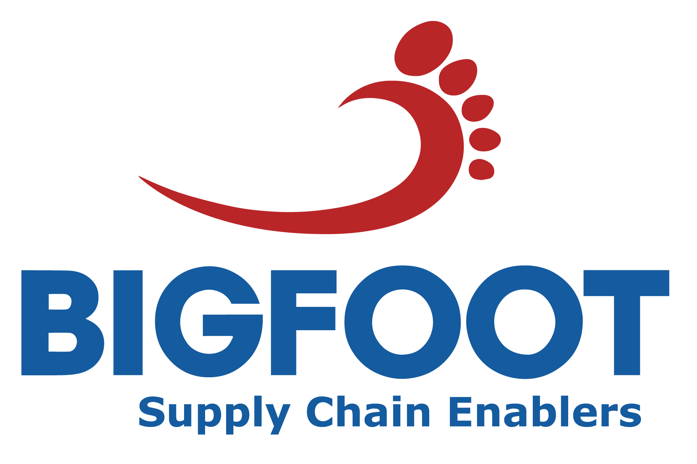
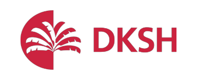
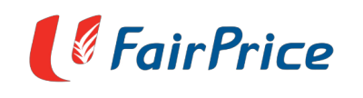
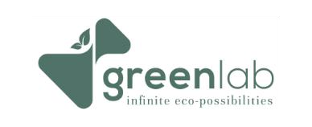
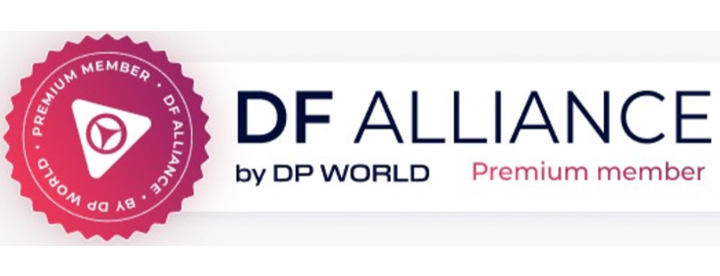
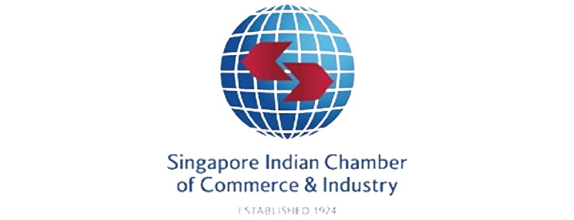
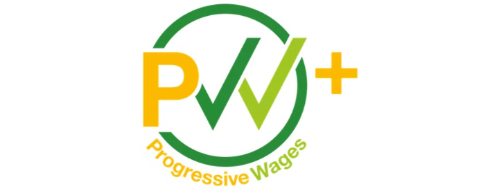
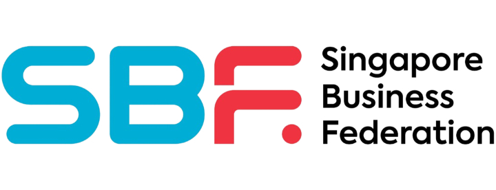
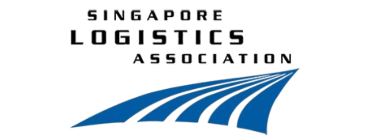

Measure
Develop carbon tracking and clearer information on fuel, energy and operational activity.

ESG / responsibility, connected
Environment. Social. Governance. A shared framework for how we operate, care for people and build a more accountable business.
Explore the frameworkThe framework
Choose a perspective to explore the commitments and working practices behind it.
Use resources thoughtfully. Reduce the impact of movement.
At our Joo Koon Road headquarters, 392 rooftop solar panels provide 229.32 kWp of installed peak capacity through our partnership with Stellar Industries Solar. At the time of the 2026 submission, the system had been operating and exporting electricity for over a year, reducing reliance on non-renewable grid electricity and helping offset electricity costs.
Cleaner transport investment includes an electric vehicle and four Scania Super P420 A4x2NZ trucks for port operations, supported by five-year repair and maintenance contracts. The Scania Super specification cited in the deck offers up to 8% fuel savings versus standard trucks; this is a vehicle specification claim rather than a measured fleet-wide reduction.
Fleet monitoring brings together vehicle positioning, performance, environmental reporting, service planning and driver insights. Alongside route optimisation and maintenance, these capabilities support fuel efficiency. Developing measurable carbon tracking and comparable emissions information remains part of our sustainability roadmap.
Cold chain efficiency starts with protecting the product. Real-time temperature monitoring, inventory visibility and exception management help reduce spoilage, while coordinated storage, handling and refrigerated transport make better use of operational resources.
Route optimisation improves delivery density and reduces unnecessary journeys. Digital documentation and paperless proof of delivery reduce administrative paper use, complemented by sustainable packaging and waste-reduction practices. AI-enabled planning forms part of the improvement programme for better fleet utilisation and reduced idle time.
Our next steps extend these efforts across the supply chain through supplier engagement, clearer carbon information and more transparent sustainability reporting.
Build the controls and accountability that make progress dependable.
Safety is a foundational operating priority. Department goals are aligned with heads of department, supported by monthly meetings, town halls and internal updates. Performance reviews place safety first, followed by service levels, productivity, warehouse accuracy, transport performance and customer feedback.
Ethical standards and sector-specific operating procedures guide responsible conduct and regulatory compliance. Singapore headquarters provides financial oversight, quality control and common operational standards across regional entities, with aligned procedures, system logs and joint audits supporting consistent execution.
Internal audit trails, documented procedures, compliance protocols and KPI dashboards support management oversight. WMS and TMS logs, SOP checks and root-cause reviews help identify operational issues and guide corrective action.
Credit policies, receivables monitoring, cash-flow discipline and headquarters-led budgeting support financial resilience across entities. Management reviews assess growth risks against operational performance and financial realities.
Defined escalation matrices guide responses to service failures, safety incidents and compliance breaches. Emergency routing and structured escalation help teams intervene promptly and maintain operational continuity.
Role-based access, secure VPN infrastructure and enterprise antivirus protect operational systems and information. Cloud backups and data recovery are supported by backup warehouse capacity, emergency logistics procedures and business continuity testing.
The Unified Intelligence Platform programme, initiated in 2026, aims to connect nine business systems, including ERP, warehouse and transport management, finance, HR, customer and fleet systems. As integration develops, defined data ownership, access rights, audit logs and cyber-risk controls underpin responsible use of operational data and AI.
Our service improvement loop follows Track, Analyse, Resolve and Improve. Delivery logs, customer feedback and SLA records identify trends; root-cause analysis and dedicated escalation support timely service recovery. Findings feed updates to procedures, training and technology to help prevent recurrence.
Management reviews also track ESG milestones and improvement priorities. Building measurable carbon data and more transparent ESG reporting remains part of the roadmap, connecting environmental progress with clear ownership and accountability.
The next chapter
Our sustainability and governance roadmap builds on operational initiatives while developing stronger measurement and reporting.
Develop carbon tracking and clearer information on fuel, energy and operational activity.
Engage suppliers and strengthen workforce inclusion across the wider business.
Build transparent ESG reporting and management oversight of progress and milestones.
Use operational data, feedback and process reviews to make the next improvement practical.
Our roadmap connects measurable environmental progress, people development and clear management accountability.
Trusted relationships






Standards. Connections. Confidence.








Social
Put people, safety and community at the heart of progress.
Safety, learning & an inclusive workforce+
Our FY2025 workforce comprised 690 people: 540 in Singapore and 150 overseas. Safe working procedures, PPE compliance, equipment handling, driving awareness and site delivery practices support their everyday wellbeing, reinforced by incident reporting and emergency readiness.
WSQ-certified, role-based learning covers logistics operations, warehouse management, facilities management and workplace safety. Structured onboarding, mentorship and quarterly learning days help employees build practical skills, share operational knowledge and adapt to new technologies.
Support for new, returning and mature workers recognises different experiences and career stages. Mentorship and recognition of high performers support continued development, while workforce inclusion remains a priority in the wider ESG roadmap.
Community care, culture & shared opportunity+
The 2026 Enterprise 50 submission records approximately S$280,000 in support across 83 initiatives from April 2025 to its reporting date. These activities span food aid, humanitarian giving, cultural preservation, youth development and social inclusion.
Support includes Gaza aid donations, Ramadan porridge distribution, meal donations and food assistance for lower-income families. Through the North West CDC V CARE programme, staff volunteers contribute fresh vegetables, groceries and essential supplies to vulnerable seniors and rental-flat residents.
Cultural and heritage commitments include Deepavali, Pongal, Indian New Year and Thaipusam activities, alongside support for LISHA, traditional arts and community institutions. Participation in POSB PAssion Run for Kids, UOB Heartbeat charity activities, youth and family programmes, and AWWA support extends that care to children, families and people with disabilities.